충남대학교 컴퓨터공학과 조은선 교수님의 "컴파일러 개론" 강의를 필기한 내용입니다.
다소 잘못된 내용과 구어적 표현 이 포함되어 있을 수 있습니다.
Semantic analysis 이전에 할거
- Lexical analysis와 Syntax analysis를 끝내면 그 결과로 나온 Parse tree로 Semantic analysis를 하는데
- Semantic analysis로 들어가기 전에 Parse tree에 좀 살을 붙이는 작업을 한다
- SDD(Syntax-Directed Definition) 혹은 SDT(Translation) 이나
- AST(Abstract Syntax Tree) 의 도구를 이용하더라
Syntax Directed Definition / Translation (SDD / SDT)
- 얜 뭐냐
- 과제에서 했던게 사실 SDD였던거임 - 어떤 생성규칙을 방문했을때, 그리고 빠져나왔을때의 Action을 설정해서 파싱 과정에서 다양한 정보를 생산할 수 있게 하는 것
- 따라서 생성규칙마다 Action을 적어놓으면 파싱 과정 혹은 파싱된 이후에 노드를 방문하며 Action들을 수행하게 된다
- 보통은 트리가 생성된 다음에 순회하지만 생성되면서 순회하는 방법도 있댄다
- LR은 Bottom-up으로 생성되면서 하고 LL같은 경우에는 Recursive descent parser구현에서 심볼마다 할당된 함수가 return될때 방문하게 됨
- 그럼 이 Action은 어떻게 적느냐
- Non-terminal마다 ‘값’이 있고 그 ‘값’들로 코드를 짜면 그게 Action이 됨
- 이렇게 말하면 뭔 소린가 싶은데
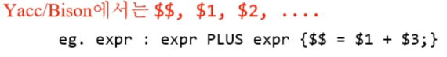
- 이게 Yacc / Bison에서의 예시임
- 보면 일단 생성규칙이 있고
- {} 에 Action을 적어주게 되는데
- Yacc에서는 RHS의 값은 저
$$라는 변수에 저장되게 되고 LHS는 앞에서부터 차례대로$n의 변수에 저장되게 된다
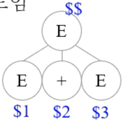
- 위 그림처럼 된다는거임
- 따라서 위의 예시에서는 RHS의 값인
$$으로 첫번째 expr의 값인$1과 두번째 expr 값인$3을 더하게 되는 것 - 여기서 주의할점은 여기에서 등장하는 변수들은 scope가 해당 생성규칙에 한정된다는 것
- 뭔소리냐면 만약에
$1이 10이고$3이 30이었다면$$의 값은 40이 되것지 - 근데 이때의 root는 또 다른 서브트리의 leaf가 될 수 있것지
- 그럼 그때 40이라는 값은
$$에 저장되는게 아니라$n에 저장된다는 거다 - 즉, 하나의 서브트리에 한정해서 루트의 값이
$$이고 리프의 값이$n이 된다는 소리임
- 뭔소리냐면 만약에
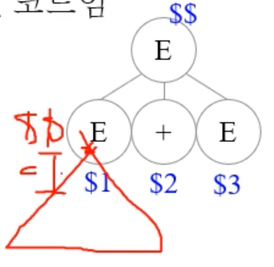
- 위 그림 보면 뭔소린지 감은 잡힐거임
- 뭐 Terminal에 대해서는 값이 없다고 생각할 수 있는데 Lex에서 던져주는 식으로 값을 가져올 수도 있댄다 - 따라서 Terminal에 대해서도 별도의 변수가 할당되어 있는 것
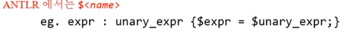
- ANTLR에서는 위처럼 표현된다는거임
- ANTLR는 파싱트리가 생성되고 난 후에 Post order traversal로 순회하며 Action을 취한다
- 따라서 BaseListener라는 클래스 원형과 Listener 라는 인터페이스를 제공하여 얘네들을 상속 / 구현해 Action들을 명시하게 되어 있음
- 생성규칙 서브트리로 진입했을 때와 나갔을때 호출되는 enter뭐시기, exit뭐시기 메소드들이 있고 얘네들 안에 코드를 적어주면 그 코드가 실행되는 것
- 자세한건 과제 참고해라
Attribute
- 위의 예제에서는
$$,$n의 값이 정수인것으로 가정했는데 $$,$n을 정수가 아닌 구조체로 명시할 수도 있다 - 이때의 구조체 Property를 Attribute 라고 부름
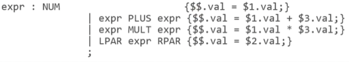
- val이라는 Attribute가 있다고 어딘가에서 명시했다는 가정 하에 위처럼 사용할 수 있는 것
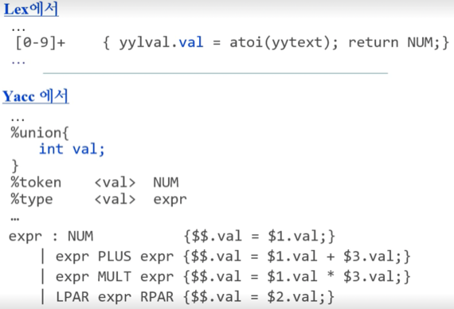
- Attribute를 명시하는 방법은 위처럼 하면 된다
- 일단 Lex에서도 yylval에 해당 Attribute가 있다고 생각하고 코드를 짠 후에
- yacc의 선언부(맨 위)에
%union {}으로 Attribute 목록을 적어주고 각각의 심벌들에 대해서 어떤 Attribute를 가지는지 명시해줄 수 있는 것 - 근데 중요한점은 위에서는 구조체라고 했지만 사실은 Union type인 것 - Attribute마다 각각의 메모리가 잡히는게 아닌 메모리를 한덩이 잡아놓고 Attribute 각각에 따라 자료형만 바뀌는거다
- 즉, 하나의 심벌이 여러개의 Attribute를 가질 수는 없는 셈
- 따라서 위처럼 명시하게 된다 -
$$,$n를 union type으로 명시하고 각각의 심벌마다 specific type을 지정해 주는 셈임 - 심벌 각각에 Attribute를 지정해 줄 때는 Non-terminal일때는
%type <attr> N이런식으로 명시하고 - Terminal에 대해서는
%token <attr> T이런식으로 명시한다
Attribute의 종류
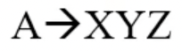
- 이런 생성규칙에 대해
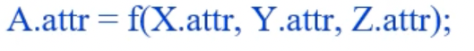
- 위처럼 children의 attribute를 이용해 parent의 attribute를 채우는 경우 Synthesized Attribute라고 부르고
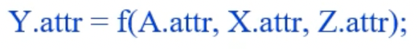
- parent, sibling의 attribute를 이용해 child의 attribute를 채우는 경우 Inherited Attribute 라고 부른다
- Synthesized Attribute 의 경우에는 Bottom-up방향으로 attribute값이 propagation되고 Inherited Attribute 의 경우에는 Top-down방향으로 attribute값이 propagation되게 된다
- 당연히 Terminal의 경우에는 Synthesized Attribute밖에 가지지 않는다
SDD를 이용한 자료형 선언 예시
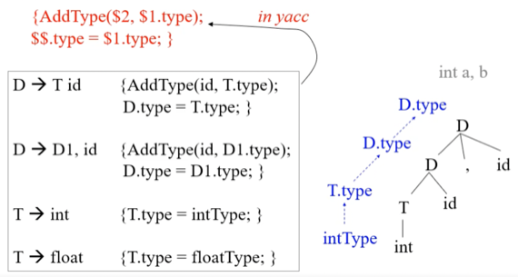
- 일단 위의 예시에서 intType과 floatType은 상수로 선언되어있다고 가정한다
- 그리고 AddType(id, type)이라는 함수를 이용해 해당 id(변수)의 자료형으로 type을 가지게 한다고 가정한다
- 마지막으로 D1저거는 그냥 D랑 똑같다고 생각하셈 - recursive declaration 이어서 RHS랑 이름이 겹치니까 걍 좀 다르게 적었다는 느낌
- 그럼 이 예시에서는 Bottom-up방식으로 propagation되며 변수의 자료형이 선언된다는 것을 알 수 있을것이다
- RHS의 attribute를 채울 때 LHS의 attribute값을 이용하면 Bottom-up방식으로 attribute가 채워지며 propagation된다
- 위의 예시에서 D의 타입도 지정해주는 이유는 두번째 생성규칙 보면 D가 재귀적으로 나오고 그 뒤에 id가 뒤이어 오기 때문에 D뒤에 나오는 id는 D의 타입을 따르게 해주기 위함
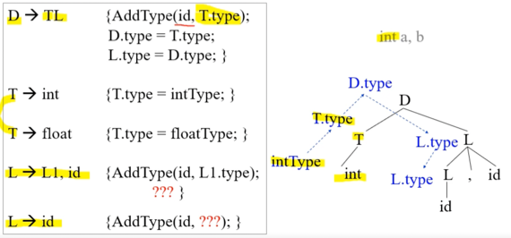
- 또 다른 예시임
- 이번에는 자료형 명시부분 T와 변수 명시 부분 L로 나누어 TL로 D가 표현되는 방식인데
- 보면 위의 예시에서는 Bottom-up 방식 뿐 아니라 Top-down방식으로도 propagation되며 자료형이 선언된다는 것을 알 수 있다
- LHS의 특정 attribute를 채우는데 RHS가 사용된다면 이때는 Top-down 방식으로 attribute가 채워지면 propagation되는 것
AST(Abstract Syntax Tree)
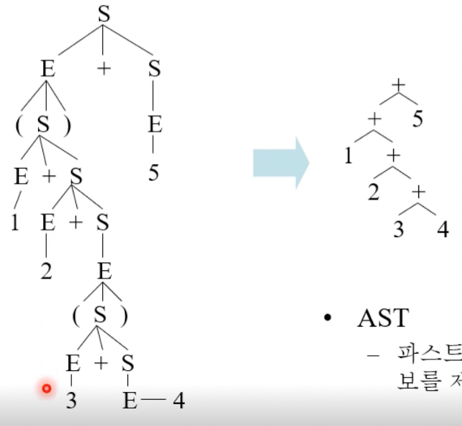
- 뭔지는 프언개때 배워서 알거임
- Parse tree에서 문법적인 부분은 모두 제거하고 의미적인 부분만 남겨서 트리구조를 단순화시킨 것
- 보면 괄호같은 경우에는 우선순위를 잡아주는 역할을 하는데 파스트리에서는 트리의 깊이도 우선순위가 녹아있기 때문에 다 제거가 되고
- Non-terminal의 경우에도 Terminal로 바로 치환해서 불필요한 것들을 다 제거하게 된다
구현 예시
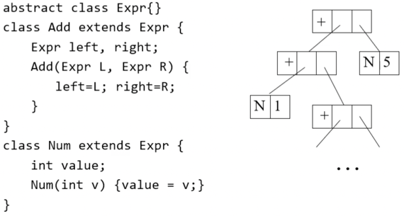
- 일단 자바로 짠 자료구조이다
- 객체지향 언어에서는 Polymorphism을 이용해 저래 표현할 수 있다더라
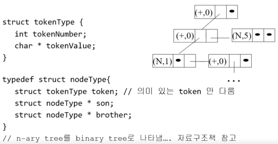
- 이건 C로 짠 코드인데
- 객체지향 언어가 아닌 경우에는 임의 자료형 자식 n개를 갖는 것을 표현하기 어렵댄다
- 자바같은경우에는 뭐 임의 자료형을 일반화해서 하나로 묶는게 되지만 C언어에서는 안되니까
- 임의 갯수의 자식을 가지는 것을 표현하기 위해 저렇게 N-ary tree를 binary tree로 바꾸는 방법을 이용한다
- 자식 포인터와 형제 포인터 두개만으로 n번째 자식에 도달하기 위해서는 첫번째 자식으로 간 다음에 링크드 리스트마냥 쭉 옆으로 따라가는 것
AST 만들기
LL파싱 하는 와중에 만들기
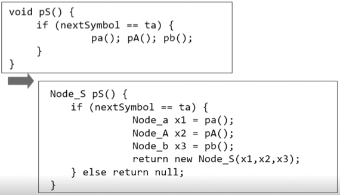
- 왼쪽 위에가 옛날에 배운 Recursive descent parser이고 오른쪽 아래가 AST생성하는 버전
- 자식이 준 AST 서브트리를 모아다가 합쳐서 반환하는 방식으로 구현
LR 파싱 하는 와중에 만들기
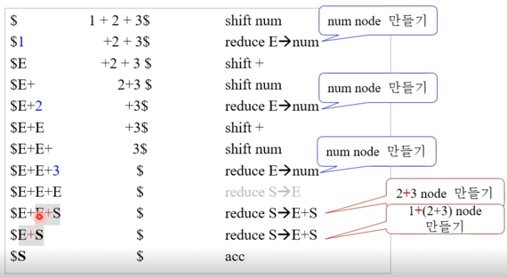
- AST이기 때문에 당연히 의미있는 것에 대해서만 Node를 생성함
- 그래서 위처럼 Shift-reduce할때
- 의미있는 Terminal을 Shift할때 단말 노드를 만들고
- 의미있는 생성규칙을 Reduce할때 단말 노드를 합쳐 Subtree를 만든다
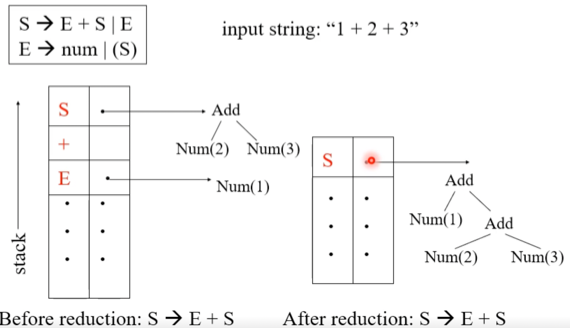
- 그래서 좀 더 자세히 보면 위처럼 됨
- 일단 심벌들마다 추가적인 공간이 있어 여기에 서브트리가 저장이 되고
- Reduce되고 난 뒤에 트리가 저렇게 합쳐지는 것을 볼 수 있음
SDD로 만들기
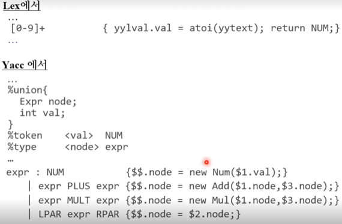
- 별거 없다
- node라는 attribute가 있어서 각각 expr에 대한 서브트리를 저장 하게 되고
- Action에서 자식의 노드를 이용해 나 자신의 노드를 채우는 연산을 수행 하게 된다
Evaluation
- Parse Tree혹은 AST에서 각각 노드를 방문하며 명시된 Action을 작동시키는 것을 Evaluation 이라고 하는데
- 그 방법중 하나로
- On-the-fly Evaluation 은 AST Node 방문 순서대로 Evaluation하는 것인데
- 가장 효율적이긴 하나 제약조건이 있다
- S-attributed SDD : Synthesized Attribute만 가지고 있는 경우
- L-attributed SDD : Synthesized Attributed와 더불어 parent가 아닌 sibling attribute 만 이용해 attribute를 계산하는 경우
- 위 두가지 경우에만 Evaluation이 가능하다